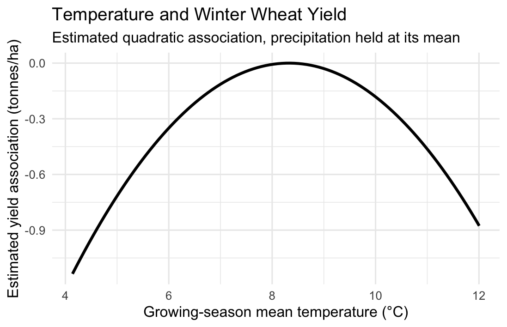
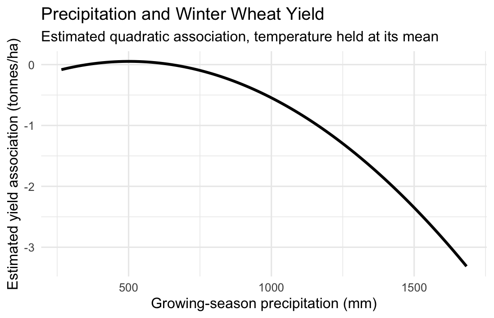

1. Background and research motivation
Climate change presents significant challenges to agricultural productivity and farm-level economic stability. Agricultural production is particularly sensitive to changing temperature and precipitation patterns, with impacts varying across crops, geographical regions, and farming systems (Carter et al., 2018). Previous research has demonstrated that climate-related yield responses can be nonlinear and vary considerably across European agricultural regions. In particular, Pirttioja et al. (2015) examined temperature and precipitation effects on wheat yields across a European transect, including Germany, highlighting the importance of considering interactions between climatic conditions and crop responses. Similarly, Reidsma et al. (2009) emphasises the role of farm-level adaptation and regional differences in shaping agricultural vulnerability to climate variability.
Understanding these relationships is an important first step towards assessing the economic implications of climate change for agricultural systems. Beyond average crop yields, climate resilience also concerns the stability of farm production, production costs, and farm income. These dimensions are increasingly relevant to the assessment of climate-resilient agriculture in Europe (European Environment Agency, 2026).
Against this background, this preliminary analysis examines the relationship between growing-season temperature, precipitation and winter wheat yields across German districts from 2000 to 2024. It provides an initial empirical foundation for further research linking climate and agronomic indicators with farm-level economic performance and financial risk.
2. Research question
How are growing-season temperature and precipitation associated with winter wheat yields across German districts?
The analysis focuses on two climate variables and explores whether their relationships with yields are nonlinear.
3. Data and variables
The analysis combines two datasets.
Agricultural data
District-level crop area and yield data for Germany, covering 1979–2024, were used to construct a winter wheat yield panel for the period 2000–2024. The dataset covers 397 districts and includes 11 crop categories. Winter wheat yields are measured in tonnes per hectare.
The agricultural dataset is based on the updated district-level dataset by Offermann and Duden (2025), building on the methodology described in Duden et al. (2024).
Climate data
Monthly temperature and precipitation data were obtained from the German Meteorological Service (Deutscher Wetterdienst, DWD), using the HYRAS-DE gridded climate datasets, version 6-1 (DWD, 2025a, 2025b). These datasets provide climate information at approximately 1 km spatial resolution.
Growing-season climate exposure was defined from October of the previous calendar year to July of the harvest year. For example, the 2020 winter wheat harvest year includes climate data from October 2019 to July 2020.
- Temperature: day-weighted mean of monthly mean temperatures (°C).
- Precipitation: sum of monthly precipitation totals (mm).
Climate values were aggregated to district level using area-weighted spatial extraction.
The two datasets were linked using district identifiers and harvest year. The resulting analytical sample contains 8,148 district-year observations across 366 districts and 25 years.
4. Empirical methodology
4.1 Empirical approach
To examine the relationship between growing-season climate conditions and winter wheat yields, I employ a panel fixed-effects regression approach. The analysis uses district-level observations for the period 2000–2024.
The empirical strategy exploits variation in temperature and precipitation within districts over time, while controlling for unobserved characteristics that remain relatively constant within each district and common year-specific factors affecting all districts. District fixed effects account for time-invariant differences across districts, while year fixed effects capture common annual shocks and trends.
4.2 Model specification
The main empirical specification is:
Where:
- Yieldit
- winter wheat yield (tonnes per hectare) in district i and year t
- Tempcit
- mean-centred growing-season temperature
- Preccit
- mean-centred growing-season precipitation, expressed in units of 100 mm
- αi
- district fixed effects
- λt
- year fixed effects
- εit
- error term
Mean-centring temperature and precipitation before including their squared terms helps make the coefficients of the linear terms easier to interpret. The quadratic terms allow the estimated relationships to change direction across different climate conditions.
4.3 Estimation and statistical inference
The regression models are estimated using ordinary least squares (OLS) with district and year fixed effects. District fixed effects account for time-invariant differences across districts, while year fixed effects control for common shocks and changes affecting all districts in a given year.
Standard errors are clustered at the district level to account for potential correlation in the error terms within districts over time. This approach allows observations from the same district across different years to have correlated errors.
To assess the overall relevance of the climate variables, a joint Wald test is conducted. The linear and quadratic terms for temperature and precipitation are tested jointly. The models are also compared using adjusted R-squared, within R-squared and root mean squared error (RMSE).
4.4 Sensitivity analysis
To assess the robustness of the results, a sensitivity analysis is conducted by excluding observations in the top 1% of the precipitation distribution. This provides a check on whether the estimated climate-yield relationships are disproportionately influenced by exceptionally wet district-year observations.
The quadratic fixed-effects model is re-estimated using the restricted sample and compared with the baseline model. The signs and statistical significance of the estimated coefficients remain broadly consistent. However, the magnitude of the squared precipitation coefficient increases in absolute terms, suggesting that the estimated curvature of the precipitation-yield relationship is somewhat sensitive to the wettest observations.
5. Preliminary findings
5.1 Regression results
Table 1 presents the results of the linear and quadratic fixed-effects regression models examining the association between growing-season climate conditions and winter wheat yields across German districts. Both specifications include district and year fixed effects, with standard errors clustered at the district level.
The linear model serves as a baseline specification, while the quadratic model allows for potential non-linear relationships by including squared temperature and precipitation terms. The quadratic specification shows a modest improvement in model fit, with adjusted R-squared increasing from 0.7229 to 0.7325 and RMSE decreasing from 0.5988 to 0.5883. The within R-squared also increases from 0.0218 to 0.0560.
In the quadratic model, both squared climate terms are negative and statistically significant at the 1% level, suggesting non-linear associations between growing-season temperature, precipitation and winter wheat yields.
| Variables | Model 1: Linear | Model 2: Quadratic |
|---|---|---|
| temperature | 0.047 | |
| (0.036) | ||
| precipitation_100 | −0.137*** | |
| (0.012) | ||
| temperature_c | 0.001 | |
| (0.035) | ||
| I(temperature_c^2) | −0.065*** | |
| (0.008) | ||
| precipitation_c | −0.071*** | |
| (0.012) | ||
| I(precipitation_c^2) | −0.024*** | |
| (0.003) | ||
| Num. obs. | 8148 | 8148 |
| R² | 0.736 | 0.745 |
| R² adj. | 0.723 | 0.732 |
| R² within | 0.022 | 0.056 |
| R² within adj. | 0.022 | 0.055 |
| AIC | 15550.1 | 15264.6 |
| BIC | 18296.2 | 18024.8 |
| RMSE | 0.60 | 0.59 |
| Std. errors | by: district_no | by: district_no |
| FE: district_no | X | X |
| FE: year | X | X |
Note: The dependent variable is winter wheat yield, measured in tonnes per hectare. Standard errors clustered at the district level are reported in parentheses. Both models include district and year fixed effects. * p < 0.10, ** p < 0.05, *** p < 0.01.
5.2 Temperature and winter wheat yields
The quadratic specification reveals a non-linear association between growing-season temperature and winter wheat yields. The squared temperature coefficient is negative and statistically significant (−0.0647, p < 0.01), indicating an inverted-U-shaped relationship. In contrast, the linear temperature coefficient is close to zero and statistically insignificant (0.0014, p = 0.967).
The estimated marginal association varies across temperature levels, as illustrated in Figure 1. At lower temperatures, an increase in temperature is positively associated with winter wheat yields, whereas at higher temperatures, the association becomes negative. The estimated turning point of the quadratic relationship is approximately 8.33 °C.

These findings suggest that the association between growing-season temperature and winter wheat yields depends on the prevailing temperature level. However, the estimates represent district-level observational associations and should not be interpreted as causal effects or as identifying an agronomic temperature optimum.
5.3 Precipitation and winter wheat yields
The quadratic specification also indicates a non-linear association between growing-season precipitation and winter wheat yields. Both the linear precipitation coefficient (−0.0712) and the squared precipitation coefficient (−0.0241) are negative and statistically significant at the 1% level. This suggests that the estimated association between precipitation and winter wheat yields becomes increasingly negative as precipitation increases.
The estimated turning point of the quadratic relationship is approximately 502 mm of growing-season precipitation. Below this level, the model indicates a slightly positive marginal association between precipitation and yields. Above this level, the estimated marginal association becomes negative and increasingly pronounced. For example, an additional 100 mm of precipitation is associated with an estimated yield change of approximately −0.047 tonnes per hectare at 600 mm and −0.144 tonnes per hectare at 800 mm, holding the other climate variable constant.

These results suggest that the relationship between precipitation and winter wheat yields depends on the amount of precipitation received during the growing season. However, the estimated turning point should not be interpreted as an agronomic optimum or a universal threshold. The analysis captures district-level observational associations and does not establish a causal effect of precipitation on yields.
5.4 Sensitivity analysis
To assess the robustness of the main findings, a sensitivity analysis was conducted by excluding observations with growing-season precipitation above the 99th percentile of the precipitation distribution. This removed 82 observations from the original sample of 8,148, leaving 8,066 observations.
The results of the restricted-sample regression are broadly consistent with the main specification. The estimated temperature coefficients retain their signs and statistical significance patterns. Similarly, both precipitation coefficients remain negative and statistically significant at the 1% level. However, the coefficient of the squared precipitation term becomes more negative, indicating a stronger estimated curvature after excluding the wettest observations.
Overall, the sensitivity analysis suggests that the main findings regarding the non-linear associations between climate variables and winter wheat yields are not driven entirely by the wettest 1% of observations. Nevertheless, the change in the estimated precipitation curvature indicates that the precise shape of this relationship is somewhat sensitive to extreme precipitation values.
| Variables | Original model | Restricted sample |
|---|---|---|
| Temperature (centred) | 0.001 | 0.004 |
| (0.035) | (0.034) | |
| Temperature² (centred) | −0.065*** | −0.063*** |
| (0.008) | (0.008) | |
| Precipitation (centred) | −0.071*** | −0.069*** |
| (0.012) | (0.012) | |
| Precipitation² (centred) | −0.024*** | −0.040*** |
| (0.003) | (0.003) | |
| District fixed effects | Yes | Yes |
| Year fixed effects | Yes | Yes |
| Within R² | 0.0560 | 0.0656 |
| RMSE | 0.5883 | 0.5827 |
Note: The dependent variable is winter wheat yield, measured in tonnes per hectare. The restricted sample excludes observations above the 99th percentile of growing-season precipitation. Standard errors clustered at the district level are reported in parentheses. Both models include district and year fixed effects. *** p < 0.001.
6. Discussion
6.1 Limitations
Several limitations should be considered when interpreting the results of this preliminary analysis.
First, the analysis is based on district-level agricultural and climate data. Although this provides broad geographical coverage across Germany, it does not capture differences between individual farms, soil conditions, farm management practices or field-level characteristics. Consequently, the estimated relationships may conceal substantial variation between farms within the same district.
Second, the analysis focuses exclusively on growing-season temperature and precipitation. Other factors that influence winter wheat yields, including soil properties, water availability, extreme weather events and agricultural management practices are not explicitly considered. Furthermore, the growing season is defined as October of the previous year to July of the harvest year. This provides a consistent period for the analysis but may not fully capture differences in crop development and climate sensitivity across regions.
Third, the empirical approach identifies observational associations rather than causal effects. Although district and year fixed effects account for time-invariant differences between districts and common annual shocks, other time-varying factors may still influence the relationship between climate conditions and crop yields.
Finally, the analysis focuses on winter wheat and does not directly examine crop rotation diversity, soil health, farm profitability or financial risk. Therefore, the results provide an initial assessment of climate–yield relationships rather than a comprehensive evaluation of climate-resilient agricultural systems.
6.2 Future research
Future research could extend this analysis by incorporating additional agronomic, environmental and economic indicators to better understand the relationship between climate-resilient agricultural practices and farm performance.
First, the analysis could be extended to other major crops, allowing comparisons of climate sensitivity across different cropping systems. Information on crop rotation patterns and crop diversity could also help investigate whether diversified rotations are associated with greater yield stability under varying climatic conditions.
Second, incorporating soil-related indicators, such as soil organic carbon, soil moisture and soil health measures, could provide further insights into the role of soil conditions in supporting climate resilience. Satellite-based indicators could complement existing agricultural and climate datasets by providing additional information on vegetation conditions and crop development.
Third, linking agronomic indicators with farm-level economic data would allow an assessment of how climate variability translates into changes in production costs, gross margins, farm income and income stability. This would provide a stronger basis for examining the economic benefits and potential risks associated with climate-resilient agricultural practices.
Finally, these economic indicators could be used to explore the implications of agricultural climate resilience for financial institutions. In particular, greater yield and income stability may be relevant when assessing agricultural lending risks and developing financial products that support the adoption of sustainable farming practices.
References
- Carter, C., Cui, X., Ghanem, D., & Mérel, P. (2018). Identifying the economic impacts of climate change on agriculture. Annual Review of Resource Economics, 10, 361–380. https://doi.org/10.1146/annurev-resource-100517-022938
- Deutscher Wetterdienst. (2025a). Raster data set of mean temperature in °C for Germany – HYRAS-DE-TAS v6-1 [Dataset]. Climate Data Center. https://opendata.dwd.de/climate_environment/CDC/grids_germany/monthly/hyras_de/air_temperature_mean/
- Deutscher Wetterdienst. (2025b). Raster data set precipitation sums in mm for Germany – HYRAS-DE-PR v6-1 [Dataset]. Climate Data Center. https://opendata.dwd.de/climate_environment/CDC/grids_germany/monthly/hyras_de/precipitation/
- Duden, C., Nacke, C., & Offermann, F. (2024). German yield and area data for 11 crops from 1979 to 2021 at a harmonized spatial resolution of 397 districts. Scientific Data, 11, Article 95. https://doi.org/10.1038/s41597-024-02951-8
- European Environment Agency. (2026). Climate resilience in Europe, 2025: Progress and challenges (EEA Report 03/2026). https://doi.org/10.2800/5228240
- Offermann, F., & Duden, C. (2025). Crop yields and area in Germany at a harmonized district-level from 1979: Update to 2024 [Data publication]. OpenAgrar. https://doi.org/10.3220/253-2025-244
- Pirttioja, N., Carter, T. R., Fronzek, S., Bindi, M., Hoffmann, H., Palosuo, T., Ruiz-Ramos, M., Tao, F., Trnka, M., Acutis, M., Cammarano, D., Baranowski, P., Basso, B., Bodin, P., Buis, S., Wallach, D., Deligios, P., Gaiser, T., Ferrise, L., Rötter, R. P. (2015). Temperature and precipitation effects on wheat yield across a European transect: A crop model ensemble analysis using impact response surfaces. Climate Research, 65, 87–105. https://doi.org/10.3354/cr01322
- Reidsma, P., Ewert, F., Oude Lansink, A., & Leemans, R. (2009). Vulnerability and adaptation of European farmers: A multi-level analysis of yield and income responses to climate variability. Regional Environmental Change, 9, 25–40. https://doi.org/10.1007/s10113-008-0059-3